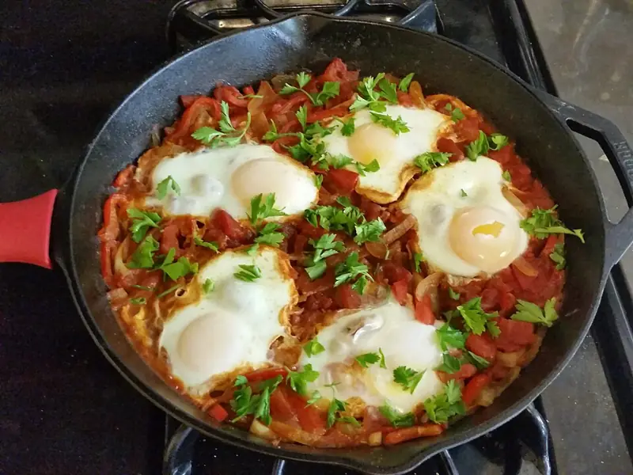

Фото: Calliopejen1, CC BY-SA 3.0

Шакшука
Яйца, запечённые в густом томатном соусе с перцем и специями
35 мин2 порц.361 ккал на порциюБ 19 · Ж 23 · У 21Средиземноморская кухня
Продукты на 2 порц.
- Яйцо куриное4 шт
- Помидоры4 шт
- Лук репчатый1 шт
- Перец болгарский1 шт
- Чеснок2 зуб.
- Оливковое масло2 ст. л.
- Паприка1 ч. л.
- Зира по желанию0,5 ч. л.
- Соль0,5 ч. л.
- Перец чёрный молотыйпо вкусу
- Петрушка по желаниюпо вкусу
Как готовить
- Лук и перец нарежьте мелким кубиком, чеснок мелко порубите, помидоры нарежьте кубиком.
- Разогрейте масло в глубокой сковороде на среднем огне. Обжарьте лук и перец 5-6 минут до мягкости.
- Добавьте чеснок, паприку и зиру, жарьте 1 минуту до аромата.
- Всыпьте помидоры, посолите и поперчите. Тушите без крышки на слабом огне 12-15 минут, пока соус не загустеет.
- Сделайте ложкой 4 углубления и разбейте в каждое по яйцу.
- Накройте крышкой и готовьте на слабом огне 5-7 минут, пока белок не станет белым, а желток останется жидким.
- Посыпьте рубленой петрушкой и подавайте прямо в сковороде с хлебом.
Совет. Зимой вместо свежих помидоров берите банку томатов в собственном соку на 400 г: вкус будет даже насыщеннее.